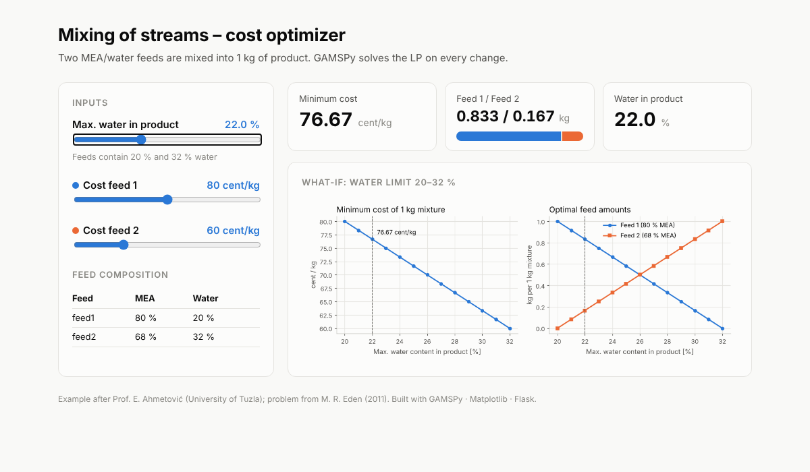
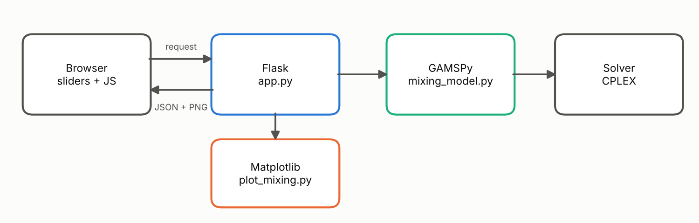
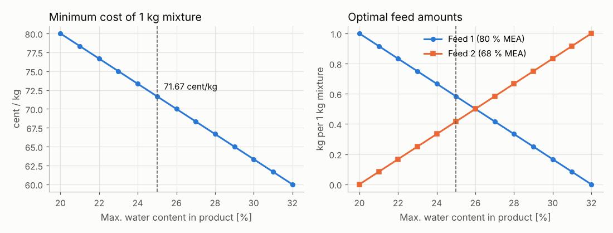

From GAMS to GAMSPy
Optimization modelling in Python – from model to interactive web page
Guest lecture
Faculty of Materials Science and Technology in Trnava · STU Bratislava

Where we end today: an optimization model as a web page (own work)
Agenda (120 min)
| Time | Block | Content |
|---|---|---|
| 0 – 5 | Opening | About me, agenda |
| 5 – 25 | 1 · Introduction to GAMS | What it is, where it is used, installation, GAMS Studio |
| 25 – 40 | 2 · Example 1 in GAMS | A simple LP – graphical vs. GAMS solution |
| 40 – 55 | 3 · Getting ready for GAMSPy | Python, GAMSPy, Visual Studio Code |
| 55 – 65 | 4 · Example 1 in GAMSPy | Translating GAMS to Python |
| 65 – 80 | 5 · Example 3 in GAMSPy | Mixing of streams – sets, parameters, data, what-if |
| 80 – 100 | 6 · From model to web page | Matplotlib and Flask, step by step |
| 100 – 120 | 7 · Summary & Q&A | What we learned, review questions |
1 · Introduction to GAMS
General Algebraic Modeling System – what it is, where it is used, how to install and run it
A short history
Today (October 2026): GAMS 54.x · GAMSPy 1.29
The GAMS ecosystem
How GAMS works
Problem types and solvers
| Model type | Meaning | Typical solvers |
|---|---|---|
| LP | Linear programming | CPLEX, HiGHS, Gurobi, XPRESS |
| MIP | Mixed-integer linear | CPLEX, HiGHS, Gurobi, SCIP |
| NLP | Nonlinear programming | CONOPT, IPOPT, SNOPT, KNITRO |
| MINLP | Mixed-integer nonlinear | DICOPT, SBB, SHOT, BARON |
| QCP / MIQCP | Quadratic constraints | CPLEX, Gurobi, MOSEK |
| MCP / MPEC | Equilibrium / complementarity | PATH, NLPEC |
| Global | Proven global optimum | BARON, SCIP |
Switching the solver = one line: option NLP = BARON;
Where is GAMS used?
GAMS in chemical engineering
- Process synthesis – flowsheet structure (MINLP)
- Heat exchanger networks – heat integration
- Distillation – sequencing, feed tray
- Reactor networks & kinetics
- Pooling and blending – refineries
- Batch plants – design, scheduling
Examples in the GAMS Model Library
process | alkylation |
procsel | flowsheet selection |
synheat | HEN synthesis |
feedtray | feed plate location |
hda | toluene hydrodealkylation |
batchdes | batch plant design |
haverly, pool | pooling |
methanol, gasoil | kinetics |
GAMS in mechanical & manufacturing engineering
- Machine elements – gears, springs, bearings
- Structural optimization – trusses, shapes
- Optimal control – robot arm, trajectories
- Manufacturing – cutting stock, production planning, flow shop
- Energy in production – machine scheduling
Examples in the GAMS Model Library
gear | gear train design |
spring | coil compression spring |
bearing, jbearing | thrust / journal bearing |
trussm | truss topology |
camshape | cam shape |
robot | robot arm |
trimloss, cutstock | cutting |
flowshop, prodplan, rcpsp | scheduling |
Why should engineers use GAMS?
- The model reads like the mathematical formulation on paper
- Same model, many solvers – compare local vs. global results
- Scales from classroom examples to industrial models
- 450+ ready models in the GAMS Model Library
- Free demo license with every download; academic licenses available
- With GAMSPy the model lives inside Python – data, plots, web apps
Resources
- GAMS homepage – www.gams.com
- GAMS documentation – gams.com/latest/docs
- GAMS Model Library – gams.com/latest/gamslib_ml/libhtml
- GAMSPy documentation – gamspy.readthedocs.io
- GAMSPy examples – github.com/GAMS-dev/gamspy-examples
- Brooke, Kendrick, Meeraus, Raman: GAMS – A User's Guide
Installing GAMS
- 1. Download – gams.com/download · Windows, Linux, macOS
- 2. Install – GAMS Studio is installed automatically; SmartScreen → More info → Run anyway
- 3. License – free demo license (size-limited) included; free / academic licenses at gams.com/free-licenses
- In Studio: Help → GAMS Licensing to paste or check the license

GAMS download page (© GAMS Development Corp.)
GAMS Studio at a glance

GAMS Studio main window (© GAMS Development Corp.)
| Area | Purpose |
|---|---|
| Project Explorer | Project files; main file marked with green ▶ |
| Code Editor | .gms with highlighting and completion |
| Listing file | .lst – solve summary, equations, variables |
| Process Log | Run messages, errors, clickable links |
| Toolbar | New · Open · Model Library · Run (F9) |
Your first run in 5 steps
- Create a project – File → New Project…
- Open a model – GAMS → Model Library Explorer (F6) →
trnsport, or File → New… - Check the main file – green ▶ in the Project Explorer (right-click → Set as Main File)
- Run – green ▶ button or F9
- Read the results – Process Log +
.lstopens automatically

Model Library Explorer (© GAMS Development Corp.)
Reading the output

Process Log and listing file (© GAMS Development Corp.)
| Log line | Double-click opens |
|---|---|
| 🔵 Blue | the .lst file at that place |
| 🔴 Red | error – the line in the source |
| 🟢 Green | created files (GDX, REF, PUT) |
Listing tree: Compilation · Equation listing · Model statistics · Solution report · Display
Look first at SOLVER STATUS 1 · MODEL STATUS 1 Optimal · OBJECTIVE VALUE
Finding and fixing errors
- Errors appear as red lines in the Process Log
- Always start with the first error – later ones are often consequences
- Click the red line → cursor jumps to the error in the
.gms - In the
.lstthe position is marked with$+ error number - Typical: missing
;, undeclared symbol, misspelled element,=instead of=e=

Compilation error in Studio (© GAMS Development Corp.)
More useful Studio tools
- GDX Viewer – sets, parameters, solutions as tables; export to Excel
- Model Library Explorer (F6) – 400+ ready-to-run models
- Solver option editor –
conopt.opt,cplex.optwith a form - Integrated help (F1) – docs for the keyword under the cursor
- Debugger – breakpoints, inspect data
- NEOS / GAMS Engine – solve remotely

GDX Viewer (© GAMS Development Corp.)
Handy shortcuts
| Action | Windows / Linux | macOS |
|---|---|---|
| Run model | F9 | F9 |
| Compile only | Shift + F9 | Shift + F9 |
| Model Library | F6 | F6 |
| Help on keyword | F1 | F1 |
| Code completion | Ctrl + Space | Ctrl + Space |
| Comment / uncomment | Ctrl + * | Cmd + * |
| Matching bracket | Ctrl + B | Cmd + B |
| Navigator (file / line) | Ctrl + K | Ctrl + K |
Links
- Download – gams.com/download
- Installation & licensing – gams.com/latest/docs/UG_MAIN.html#UG_INSTALL
- Free licenses – gams.com/free-licenses
- GAMS Studio manual – gams.com/latest/docs/T_STUDIO.html
- GAMS Studio tutorial (B. McCarl) – gams.com/latest/docs/UG_studio_tutorial.html
2 · Example 1 in GAMS
A simple linear program – graphical solution vs. GAMS solution
Example adapted from Prof. Elvis Ahmetović, University of Tuzla
The same model in GAMS
$Title Simple LP optimisation problem
Positive Variables x1, x2;
Free Variable Z;
Equations obj, eq1, eq2;
obj.. Z =e= 3*x1 + 2*x2;
eq1.. x1 + 3*x2 =l= 4;
eq2.. x1 + x2 =l= 2;
Model Example01 /all/;
Solve Example01 maximizing Z using LP;
Display x1.l, x2.l, Z.l;- Variables – x₁, x₂ ≥ 0, objective Z free
- Equations – declared, then defined with
.. - Model – all equations
- Solve – direction, objective, model type
- Display – print the results
Reading the code line by line
| Statement | Meaning |
|---|---|
Positive Variables x1, x2; | Decision variables with bound x ≥ 0 |
Free Variable Z; | Objective variable – must be free |
Equations obj, eq1, eq2; | Declare the equation names |
obj.. Z =e= …; | Define the equation; .. separates name and body |
=e= =l= =g= | equal · less or equal (≤) · greater or equal (≥) |
Model Example01 /all/; | Model = all declared equations |
Solve … maximizing Z using LP; | Direction, objective variable, model type |
Display x1.l, …; | Print the level (.l) = optimal value |
Every statement ends with ; – the most common beginner error!
Running it in GAMS Studio LIVE
- File → New Project… → folder e.g.
GAMS_lecture - File → New… →
Example01.gms, type or paste the code - Save (Ctrl + S) – check the green ▶ main-file marker
- Press F9 (or the green Run button)
- The Process Log shows the run;
Example01.lstopens automatically
Live: first delete one ; → red error line + $ marker in the listing, then fix it.
Results in the listing file
S O L V E S U M M A R Y
MODEL Example01 OBJECTIVE Z
TYPE LP DIRECTION MAXIMIZE
SOLVER CPLEX FROM LINE 18
**** SOLVER STATUS 1 Normal Completion
**** MODEL STATUS 1 Optimal
**** OBJECTIVE VALUE 6.0000---- 20 VARIABLE x1.L = 2.000
VARIABLE x2.L = 0.000
VARIABLE Z.L = 6.000✅ Same as the graphical solution: x₁ = 2, x₂ = 0, Z = 6
Default LP solver: CPLEX
Try it yourself
- Change the objective to Z = 2x₁ + 3x₂ – which corner wins now?
- Look at the marginals
eq1.m,eq2.m– which constraint is binding? - Switch the solver: add
option LP = HiGHS;beforeSolve - Change
maximizingtominimizing– what happens and why?
3 · From GAMS to GAMSPy
Installing Python, GAMSPy and Visual Studio Code on Windows
What is GAMSPy?
- A Python package for algebraic modelling – sets, parameters, variables, equations as Python objects
- Uses the GAMS engine and solvers in the background
- No separate GAMS installation –
pip install gamspybrings its own GAMS core - Works with pandas, NumPy, Matplotlib, Jupyter, web apps
- Free demo license; free for academics (GAMS Academic Program)
⚠ GAMS and GAMSPy licenses are different – a GAMS license cannot be used for GAMSPy.
Step 1 – Install Python
- GAMSPy needs Python 3.11 or newer
- Download from python.org/downloads
- In the installer tick ✅ "Add python.exe to PATH"
- Check in PowerShell:
python --versionStep 2 – Create a virtual environment
Open PowerShell in your working folder (e.g. C:\GAMS_lecture):
python -m venv .gamspy_venv
.gamspy_venv\Scripts\Activate.ps1The prompt now starts with (.gamspy_venv) ✅
⚠ PowerShell blocks the script ("running scripts is disabled")?
Set-ExecutionPolicy -Scope CurrentUser RemoteSignedStep 3 – Install GAMSPy
pip install gamspyCheck the installation:
gamspy --versionGAMSPy version: 1.29.0
GAMS version: 54.6.0
gamspy_base version: 54.6.0Update later with pip install gamspy --upgrade
Step 4 – Solvers
Show the installed solvers:
gamspy list solversIncluded by default: CPLEX (LP, MIP), CONOPT4 (NLP), SBB (MINLP), PATH (MCP)
Install more on demand:
gamspy list solvers --all
gamspy install solver highs ipoptChoose the solver in Python:model.solve(solver="highs")
Step 5 – License (optional)
The demo license works out of the box for small models – enough for this lecture.
With an academic or full license (36-character access code):
gamspy install license <access_code>
gamspy show licenseBack to demo: gamspy uninstall license · Demo limits: GAMS documentation
Step 6 – Test it
import gamspy as gp
m = gp.Container()
x = gp.Variable(m, "x")
e = gp.Equation(m, "e")
e[...] = x >= 1
model = gp.Model(m, "test", equations=[e],
problem="LP", sense="min", objective=x)
model.solve()
print(model.status, model.objective_value)Save as test_gamspy.py, run python test_gamspy.py:
ModelStatus.OptimalGlobal 1.0✅ GAMSPy is ready
Quick reference
| Task | Command |
|---|---|
| Create environment | python -m venv .gamspy_venv |
| Activate (PowerShell) | .gamspy_venv\Scripts\Activate.ps1 |
| Install GAMSPy | pip install gamspy |
| Version | gamspy --version |
| List solvers | gamspy list solvers |
| Add a solver | gamspy install solver <name> |
| Install license | gamspy install license <access_code> |
| Show license | gamspy show license |
Step 1 – Install VS Code
- Download from code.visualstudio.com → Download for Windows
- Run the installer and tick:
✅ Add "Open with Code" to the Explorer context menu · ✅ Add to PATH - Start VS Code
VS Code is free, light and runs on Windows, macOS and Linux.
Step 2 – Python extension
- Open Extensions (Ctrl + Shift + X)
- Search Python → install the extension by Microsoft (
ms-python.python) - The Python Debugger is installed automatically with it
Optional: Jupyter extension (Microsoft) for notebooks (.ipynb)
⚠ The extension does not include Python itself – Python 3.11+ must be installed first.
Step 3 – Open your project folder
- File → Open Folder… → e.g.
C:\GAMS_lecture - or right-click the folder in Windows Explorer → Open with Code
- Confirm "Yes, I trust the authors"
One folder = one project – your .py files and .gamspy_venv live here.
Step 4 – Select the Python environment
Command Palette Ctrl + Shift + P:
→
Python: Select Interpreter → choose .gamspy_venv→
Python: Create Environment → Venv → Python 3.11+The selected environment is shown in the status bar (bottom right).
Step 5 – Install GAMSPy in the environment
Integrated terminal: Terminal → New Terminal (Ctrl + Shift + `)
The prompt should start with the environment name, e.g. (.gamspy_venv) ✅
pip install gamspy matplotlib
gamspy --versionWe install Matplotlib now as well – for plotting results later.
Step 6 – Run your first script
Create test_gamspy.py, paste the test model, save (Ctrl + S):
- Click ▶ Run Python File (top right of the editor), or
- Right-click → Run Python → Run Python File in Terminal
- Select lines + Shift + Enter → run only the selection
Output in the Terminal panel:
ModelStatus.OptimalGlobal 1.0VS Code shortcuts for this lecture
| Action | Shortcut |
|---|---|
| Command Palette | Ctrl + Shift + P |
| Extensions | Ctrl + Shift + X |
| New terminal | Ctrl + Shift + ` |
| Run selection in terminal | Shift + Enter |
| Debug (start) | F5 |
| Comment / uncomment line | Ctrl + / |
| Quick open file | Ctrl + P |
4 · Example 1 in GAMSPy
Same model – now in Python
GAMS → GAMSPy: the dictionary
| GAMS | GAMSPy |
|---|---|
| (the whole .gms file) | m = gp.Container() |
Set i / i1, i2 /; | i = gp.Set(m, "i", records=["i1", "i2"]) |
Parameter p(i) / … /; | p = gp.Parameter(m, "p", domain=i, records=…) |
Positive Variable x; | x = gp.Variable(m, "x", type="positive") |
Free Variable Z; | Z = gp.Variable(m, "Z", type="free") |
Equation e; | e = gp.Equation(m, "e") |
e.. lhs =e= rhs; | e[...] = lhs == rhs |
=l= / =g= | <= / >= |
sum(i, a(i)) | gp.Sum(i, a[i]) |
Model mod /all/; | gp.Model(m, "mod", equations=m.getEquations(), …) |
Solve mod using LP maximizing Z; | problem="LP", sense="max", objective=Z + mod.solve() |
Display x.l; | print(x.toValue()) or print(x.records) |
Side by side
Positive Variables x1, x2;
Free Variable Z;
Equations obj, eq1, eq2;
obj.. Z =e= 3*x1 + 2*x2;
eq1.. x1 + 3*x2 =l= 4;
eq2.. x1 + x2 =l= 2;
Model Example01 /all/;
Solve Example01 maximizing Z using LP;
Display x1.l, x2.l, Z.l;import gamspy as gp
m = gp.Container()
x1 = gp.Variable(m, "x1", type="positive")
x2 = gp.Variable(m, "x2", type="positive")
Z = gp.Variable(m, "Z", type="free")
obj = gp.Equation(m, "obj")
eq1 = gp.Equation(m, "eq1")
eq2 = gp.Equation(m, "eq2")
obj[...] = Z == 3*x1 + 2*x2
eq1[...] = x1 + 3*x2 <= 4
eq2[...] = x1 + x2 <= 2
example01 = gp.Model(m, "example01",
equations=m.getEquations(),
problem="LP", sense="max", objective=Z)
example01.solve()
print(x1.toValue(), x2.toValue(), Z.toValue())How to convert – step by step
- Import and create a Container –
import gamspy as gp,m = gp.Container() - Variables – each declaration becomes
gp.Variable(...)withtype= - Equations – declare with
gp.Equation(...), define witheq[...] = … - Relations –
=e=→==,=l=→<=,=g=→>=; no; - Model – list of equations +
problem,sense,objective - Solve –
model.solve()(default LP solver: CPLEX) - Results –
.toValue()for scalars,.records(pandas DataFrame) for indexed symbols
⚠ eq1 = x1 + 3*x2 <= 4 without [...] overwrites the Python variable instead of defining the equation.
Run it in VS Code LIVE
- Open the folder
C:\GAMS_lecture– environment.gamspy_venvselected - New file
example01_gams_style.py– paste the code, Ctrl + S - Click ▶ Run Python File
- Read the result in the Terminal panel
Full solver log as in GAMS Studio:
import sys
example01.solve(output=sys.stdout)Results
solve() returns a summary table (pandas DataFrame):
Solver Status Model Status Objective ... Model Type Solver Solver Time
0 NormalCompletion OptimalGlobal 6.0 ... LP CPLEX 0.014Values:
x1 = 2.0 x2 = 0.0 Z = 6.0Full record – print(x1.records):
level marginal lower upper scale
0 2.0 0.0 0.0 inf 1.0✅ Same as graphical solution and GAMS: x₁ = 2, x₂ = 0, Z = 6
The Python way – shorter
The objective is written directly as an expression – no Z variable, no obj equation:
example01 = gp.Model(m, "example01",
equations=[eq1, eq2],
problem="LP", sense="max",
objective=3 * x1 + 2 * x2)
example01.solve()
print("Model status :", example01.status)
print("Objective Z :", example01.objective_value)
print("Marginals :", eq1.records["marginal"][0],
eq2.records["marginal"][0])Model status : ModelStatus.OptimalGlobal
Objective Z : 6.0
Marginals : 0.0 3.0eq2 is binding (shadow price 3), eq1 has slack (0).
Bonus: back to GAMS and LaTeX
A GAMSPy model can be exported:
example01.toGams("exported") # exported/example01.gms
example01.toLatex("latex") # latex/example01.texOpen the model in GAMS Studio, or paste the equations into a paper.
Generated example01.gms:
positive Variable x1;
positive Variable x2;
free Variable Z;
...
obj .. Z =e= 3 * x1 + 2 * x2;
eq1 .. x1 + 3 * x2 =l= 4;
eq2 .. x1 + x2 =l= 2;
solve example01 using LP MAX Z;5 · Example 3 – Mixing of streams
Sets, parameters and data in GAMSPy
Example after Prof. Elvis Ahmetović; problem from M. R. Eden (2011)
Step 1 – direct translation
import gamspy as gp
m = gp.Container()
m1 = gp.Variable(m, "m1", type="positive", description="mass of feed 1 [kg]")
m2 = gp.Variable(m, "m2", type="positive", description="mass of feed 2 [kg]")
z = gp.Variable(m, "z", type="free", description="cost [cent/kg]")
obj = gp.Equation(m, "obj")
water = gp.Equation(m, "water")
balance = gp.Equation(m, "balance")
obj[...] = z == 80 * m1 + 60 * m2
water[...] = 0.20 * m1 + 0.32 * m2 <= 0.25
balance[...] = m1 + m2 == 1
mixing = gp.Model(m, "mixing", equations=m.getEquations(),
problem="LP", sense="min", objective=z)
mixing.solve()z = 71.667 cent/kg
m1 = 0.583 kg
m2 = 0.417 kg✅ Same pattern as Example 1
New: == for the balance and description= texts.
Problem: numbers are inside the equations
- Costs and compositions are hard-coded – a 3rd feed or component → rewrite the model
- Real models: hundreds of streams, data from Excel / databases → separate model and data
| Concept | GAMS | GAMSPy |
|---|---|---|
| Index set | Set f /feed1, feed2/; | gp.Set(m, "f", records=[...]) |
| Data | Parameter cost(f) /.../; | gp.Parameter(m, "cost", domain=f, records=...) |
| Table | Table w(f,c) | gp.Parameter(..., domain=[f, c], records=DataFrame) |
| Indexed variable | x(f) | gp.Variable(m, "x", domain=f) |
| Sum | sum(f, cost(f)*x(f)) | gp.Sum(f, cost[f] * x[f]) |
Step 2 – general (indexed) formulation
- Sets: \(f\) – feeds, \(c\) – components
- Parameters: \(cost_f\), \(w_{f,c}\) mass fraction, \(wmax_c\) limit, \(M\) product amount
- Variable: \(x_f \ge 0\) – mass of feed \(f\) in product
➡ The model does not change when you add feeds or components – only the data.
Sets and data
import pandas as pd
import gamspy as gp
m = gp.Container()
# Sets
f = gp.Set(m, "f", records=["feed1", "feed2"], description="feed streams")
c = gp.Set(m, "c", records=["MEA", "water"], description="components")
# Data – composition as a pandas DataFrame (could come from Excel)
composition = pd.DataFrame(
[["feed1", "MEA", 0.80], ["feed1", "water", 0.20],
["feed2", "MEA", 0.68], ["feed2", "water", 0.32]],
columns=["f", "c", "value"])
w = gp.Parameter(m, "w", domain=[f, c], records=composition)
cost = gp.Parameter(m, "cost", domain=f, records=[["feed1", 80], ["feed2", 60]])
wmax = gp.Parameter(m, "wmax", domain=c, records=[["water", 0.25]])
M = gp.Parameter(m, "M", records=1)Variables, equations, model
x = gp.Variable(m, "x", type="positive", domain=f)
spec = gp.Equation(m, "spec", domain=c)
balance = gp.Equation(m, "balance")
# one equation for every component c that has a limit
spec[c].where[wmax[c]] = gp.Sum(f, w[f, c] * x[f]) <= wmax[c] * M
balance[...] = gp.Sum(f, x[f]) == M
mixing = gp.Model(m, "mixing", equations=m.getEquations(),
problem="LP", sense="min",
objective=gp.Sum(f, cost[f] * x[f]))
mixing.solve()| GAMSPy | GAMS equivalent |
|---|---|
spec[c] | spec(c).. – an equation for each c |
.where[wmax[c]] | $wmax(c) – only where a limit exists |
gp.Sum(f, …) | sum(f, …) |
Results
print(mixing.objective_value)
print(x.records[["f", "level"]])Minimum cost: 71.667 cent/kg
f level
0 feed1 0.583333
1 feed2 0.416667Check the product composition:
product = gp.Parameter(m, "product", domain=c)
product[c] = gp.Sum(f, w[f, c] * x.l[f]) / M c value
0 MEA 0.75
1 water 0.25 ← constraint is activeWhat-if: change the water limit LIVE
for limit in [0.20, 0.22, 0.25, 0.28, 0.32]:
wmax.setRecords([["water", limit]])
mixing.solve()
x1, x2 = x.records["level"]
print(limit, mixing.objective_value, x1, x2)Change data → solve again, no model rewriting.
| Water limit | Cost | Feed 1 | Feed 2 |
|---|---|---|---|
| 0.20 | 80.000 | 1.000 | 0.000 |
| 0.22 | 76.667 | 0.833 | 0.167 |
| 0.25 | 71.667 | 0.583 | 0.417 |
| 0.28 | 66.667 | 0.333 | 0.667 |
| 0.32 | 60.000 | 0.000 | 1.000 |
Try it yourself
- Add a third feed: 90 % MEA, 10 % water, 95 cent/kg – only the data changes!
- Add a minimum MEA content of 72 % – hint: a
wmin(c)and a>=equation - Produce M = 1000 kg instead of 1 kg
- Water limit 0.15? Check
mixing.status
6 · From model to web page
GAMSPy + Matplotlib + Flask – in 7 testable steps
What we are going to build

| File | Step | Role |
|---|---|---|
mixing_model.py | 2 | Example 3 as a Python function |
plot_mixing.py | 3 | What-if chart with Matplotlib |
app_step4.py … app_step6.py | 4–6 | Flask, growing step by step |
app.py + templates/index.html | 7 | Final interactive page |
Step 1 – Install Matplotlib and Flask
VS Code terminal, .gamspy_venv active:
pip install matplotlib flaskpython -c "import gamspy, matplotlib, flask; print('all OK')"Folder structure:
C:\GAMS_lecture\webapp\
mixing_model.py
plot_mixing.py
app_step4.py app_step5.py app_step6.py
app.py
templates\index.htmlStep 2 – Model as a reusable function
mixing_model.py – Example 3 wrapped in a function: inputs → results dictionary
def solve_mixing(water_limit=0.25, cost1=80.0, cost2=60.0, amount=1.0):
m = gp.Container() # new container for every call
... # sets, parameters, x(f), spec(c), balance
mixing.solve()
if "Optimal" not in mixing.status.name:
return {"ok": False, "status": mixing.status.name}
x1, x2 = x.records["level"]
return {"ok": True, "cost": mixing.objective_value,
"feed1": x1, "feed2": x2, ...}python mixing_model.py
{'ok': True, 'status': 'OptimalGlobal', 'water_limit': 0.25, 'cost': 71.666..., 'feed1': 0.583..., ...}
{'ok': False, 'status': 'InfeasibleNoSolution', 'water_limit': 0.15}Step 3 – What-if chart with Matplotlib
import matplotlib
matplotlib.use("Agg") # no window – draw to file / memory
import matplotlib.pyplot as plt
res = sweep(limits) # 13 GAMSPy solves
ax1.plot(lim, [r["cost"] for r in res])
ax2.plot(lim, [r["feed1"] for r in res], label="Feed 1")
ax2.plot(lim, [r["feed2"] for r in res], label="Feed 2")
fig.savefig("mixing_whatif.png")python plot_mixing.py → open mixing_whatif.png
Output of plot_mixing.py (own work)
Step 4 – The smallest Flask app
# app_step4.py
from flask import Flask
app = Flask(__name__)
@app.route("/")
def home():
return "<h1>Hello from Flask!</h1>"
if __name__ == "__main__":
app.run(debug=True)python app_step4.py, open http://127.0.0.1:5000Stop the server with Ctrl + C before the next step.
@app.route("/")– URL → Python functiondebug=True– restarts on every save
Step 5 – A form that solves the model
# app_step5.py – the browser sends a number, Flask calls GAMSPy
from flask import Flask, request, render_template_string
from mixing_model import solve_mixing
PAGE = """
<form method="post">
Max. water content [%]: <input name="water" type="number" value="{{ water }}">
<button>Solve</button>
</form>
{% if r.ok %} <p>Minimum cost: <b>{{ "%.2f"|format(r.cost) }} cent/kg</b></p>
{% else %} <p>No feasible mixture ({{ r.status }})</p> {% endif %}
"""
@app.route("/", methods=["GET", "POST"])
def home():
water = float(request.form.get("water", 25))
return render_template_string(PAGE, water=water,
r=solve_mixing(water_limit=water / 100))76.67 cent/kg; enter 15 → No feasible mixtureStep 6 – Add the Matplotlib chart
app_step6.py – a second route returns the chart as a PNG image:
import io
from flask import Response
from plot_mixing import make_figure
import matplotlib.pyplot as plt
@app.route("/plot.png")
def plot_png():
water = float(request.args.get("water", 25))
fig = make_figure(current=solve_mixing(water_limit=water / 100))
buf = io.BytesIO()
fig.savefig(buf, format="png") # save into memory, not to disk
plt.close(fig) # free memory
return Response(buf.getvalue(), mimetype="image/png")In the page: <img src="/plot.png?water={{ water }}">
Step 7 – Interactive page: JSON API
# app.py – two data routes + one page
@app.route("/")
def index():
return render_template("index.html", feeds=FEEDS)
@app.route("/api/solve") # results as JSON
def api_solve():
water, cost1, cost2 = read_inputs()
return jsonify(solve_mixing(water_limit=water, cost1=cost1, cost2=cost2))
@app.route("/plot.png") # chart as PNG (as in step 6)
def plot_png(): ...{ "cost": 71.67, "feed1": 0.583, "feed2": 0.417, "ok": true,
"status": "OptimalGlobal", "water": 0.25, "water_limit": 0.25 }Step 7 – Interactive page: sliders + JavaScript
templates/index.html – sliders call the API on every change:
<input id="water" type="range" min="15" max="35" step="0.5" value="25">
<input id="cost1" type="range" min="40" max="120" value="80">
<input id="cost2" type="range" min="40" max="120" value="60">
<img id="plot">async function update() {
const q = new URLSearchParams({ water: water.value,
cost1: cost1.value, cost2: cost2.value });
const r = await (await fetch("/api/solve?" + q)).json(); // GAMSPy
document.getElementById("cost").textContent = r.cost.toFixed(2);
document.getElementById("plot").src = "/plot.png?" + q; // Matplotlib
}python app.py, move the sliders – numbers and chart updateThe result LIVE
app.py with water limit 22 % (own work)
- Sliders: water limit, cost of feed 1 and 2
- Cards: minimum cost, feed ratio, water in product
- Chart: what-if analysis, current case marked
- Infeasible input (< 20 % water) → red warning
Summary & next steps
| Layer | Tool | Our file |
|---|---|---|
| Optimization model | GAMSPy | mixing_model.py |
| Visualization | Matplotlib | plot_mixing.py |
| Web server | Flask | app.py |
| User interface | HTML + JavaScript | templates/index.html |
- Third feed or minimum MEA content – only
mixing_model.pychanges - Read feed data from Excel with
pandas.read_excel - Deploy for students – a university server, or GAMS MIRO for a ready-made UI
What we learned today
| GAMS | GAMSPy | |
|---|---|---|
| Language | own algebraic language (.gms) | Python package |
| Environment | GAMS Studio | VS Code / Jupyter |
| Results | listing file .lst, GDX | pandas DataFrames, .toValue() |
| Data | tables in the model, GDX | pandas, Excel, databases |
| Apps | GAMS MIRO | Matplotlib, Flask, any Python tool |
| Solvers | the same: CPLEX, CONOPT, BARON, HiGHS, … | |
Same algebraic model – two ways to write it. GAMS for pure modelling, GAMSPy when the model is part of a bigger Python workflow.
Review questions
- What is the key idea of an algebraic modelling language like GAMS?
- Why must the objective variable Z be declared
Freein GAMS? - What do
=e=,=l=,=g=mean and what are they in GAMSPy? - Which constraint is binding at the optimum of Example 1 and how do you see it?
- What does
[...]do ineq1[...] = …– and what happens without it? - Why is LP, not NLP, the correct model type for Example 3?
- Why separate the model from the data with sets and parameters?
- Why is a water limit below 20 % infeasible?
Where to continue
- GAMS Model Library – 400+ models, many from chemical and mechanical engineering
- GAMSPy examples – github.com/GAMS-dev/gamspy-examples
- GAMSPy for GAMS users – gamspy.readthedocs.io/…/gamspy_for_gams_users
- All code from today – ⬇ gamspy_lecture_code.zip
Homework: extend Example 3 with a third feed and a minimum MEA content, then show the result in the web app.
Acknowledgements
- Examples 1 and 3 adapted from the lecture of Prof. Elvis Ahmetović (University of Tuzla) – Mathematical modelling in GAMS, Erasmus+ lecture at STU, November 2025
- Example 3 problem from M. R. Eden: Process Synthesis, Simulation and Optimization, 2011
- Thanks to the hosts for the invitation
Thank you – questions?
Martin Necpal · martin.necpal@stuba.sk · martinnecpal.aiplaces.org
Sources and further reading
- Ahmetović, E.: Mathematical modelling in General Algebraic Modelling System (GAMS). Erasmus+ lecture, STU Bratislava, 2025
- Eden, M. R.: Process Synthesis, Simulation and Optimization. 2011
- Brooke, A.; Kendrick, D.; Meeraus, A.; Raman, R.: GAMS – A User's Guide. GAMS Development Corp.
- GAMS documentation and Model Library – gams.com/latest/docs
- GAMSPy documentation – gamspy.readthedocs.io
- VS Code Python tutorial – code.visualstudio.com/docs/python/python-tutorial
- Matplotlib – matplotlib.org · Flask – flask.palletsprojects.com
Screenshots of GAMS Studio © GAMS Development Corp., linked for teaching purposes